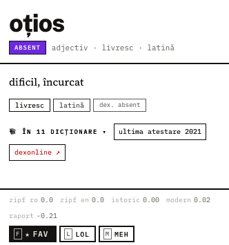

Am încercat să găsesc o metodă de a descoperi cuvintele uitate / neglijate ale limbii române, mai degrabă ieșite din uz, evitând însă termenii foarte vechi care și-au pierdut de tot relevanța.
Cuvinte apărute în dicționare, dar care sunt întâlnite rar sau deloc în româna modernă. Suveranism lexical. Use it or lose it.
Poți marca cuvintele din info box sau din tastatură (F, L, M):
★ Fav — merită păstrat;
😂 Lol — amuzant;
⚠️ Meh — nu e ce căutăm – irelevant sau prea comun.
Termenii marcați pot fi partajați în colecții publice, ceea ce vă și rog, întru rafinarea listei publice: ★FAV sau LOL sunt prioritizate, MEH, dimpotrivă.

_____________
vezi și: 📊 stats · metodologie (LLM blabber)
poșta redacției:
/gov2-ro/otzios
| Legendă | |
| 42 | Frecvență DEX, 0–100 — cât de central e cuvântul în dicționar, nu cât de des e folosit (explicație) |
| dispărut din uz — niciun semnal modern | |
| în declin — încă folosit, dar tot mai rar | |
| doar istoric — apare doar în surse istorice | |
| absent — niciun semnal în corpus, posibil cel mai uitat | |
| Acțiuni | |
| f | fav — păstrează |
| l | lol — amuzant |
| m | meh — ca ascunde, zis altfel |
| o | Deschide dexonline.ro |
| ? | Arată / ascunde shortcut-uri |
| Navigare | |
| jkh→ | Navigare grilă (↓ ↑ ← →) — l e liber pentru lol |
| gg | Salt la început |
| G | Salt la final |
| Căutare | |
| / | Focus căutare |
| r | Cuvânt aleator |
| Esc | Închide |